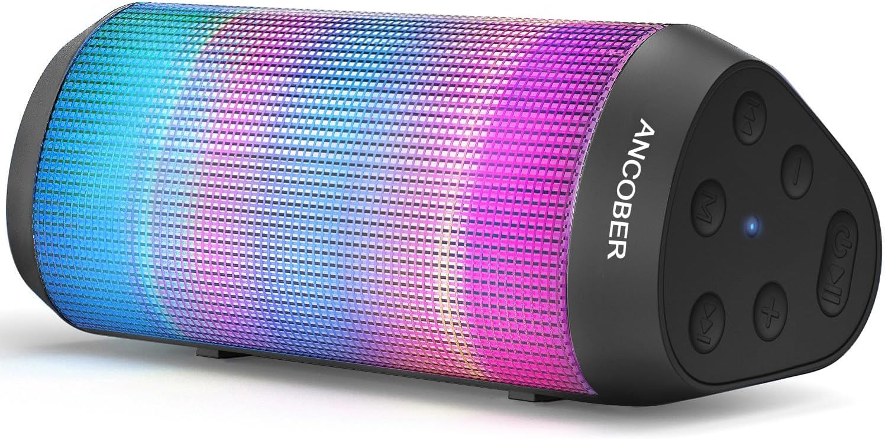
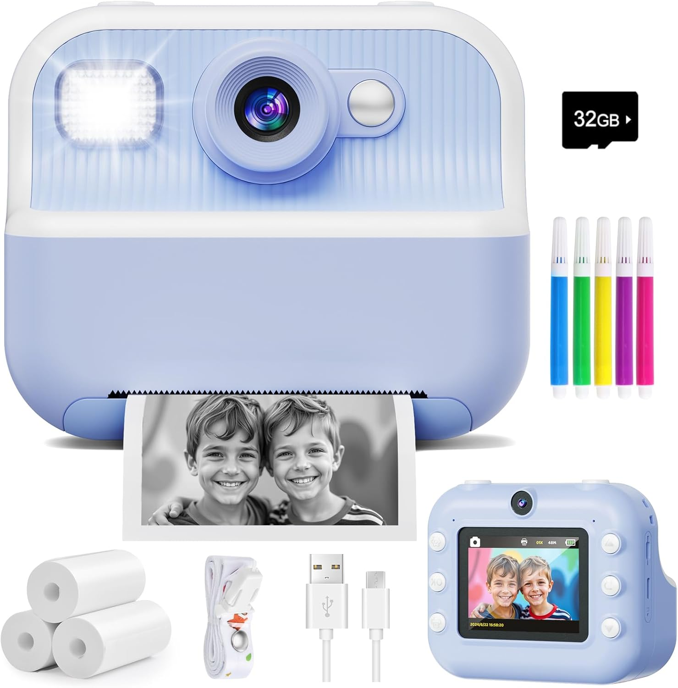
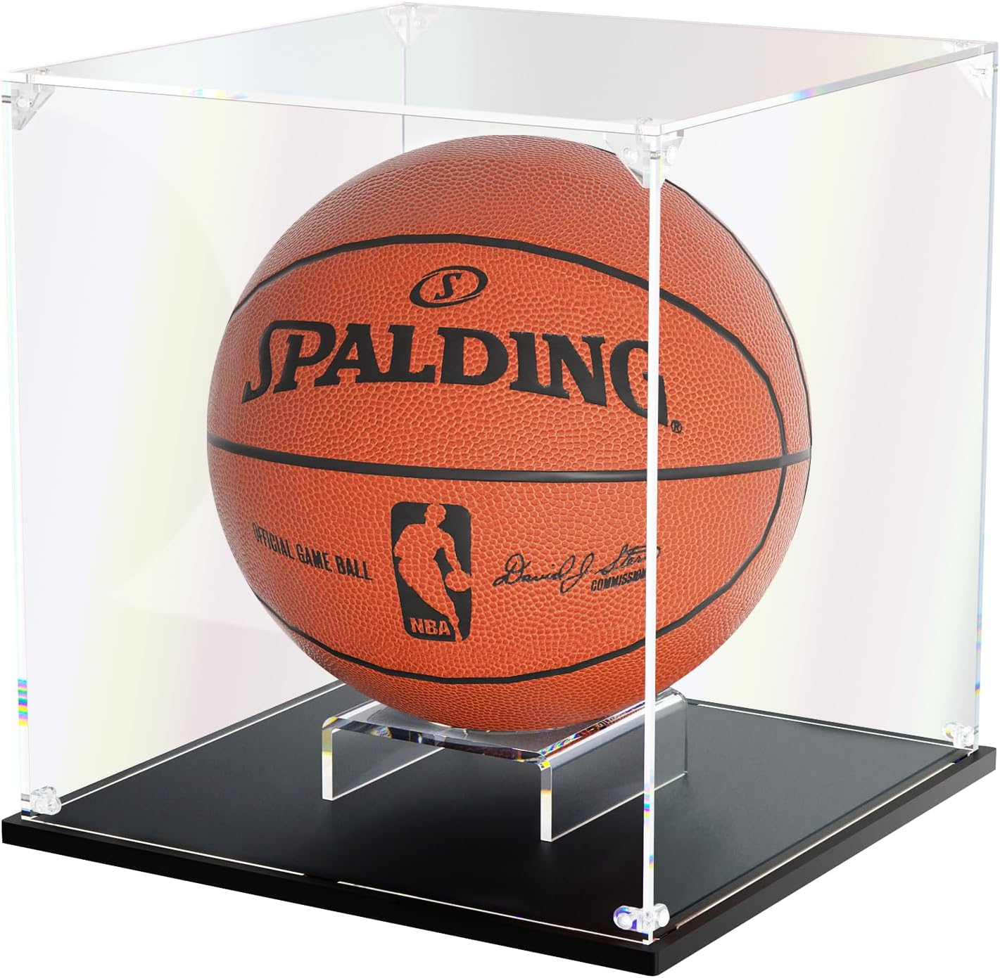
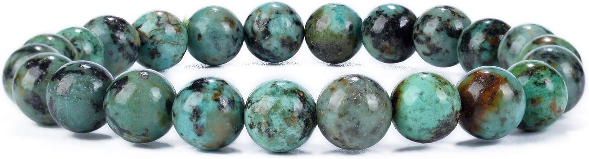
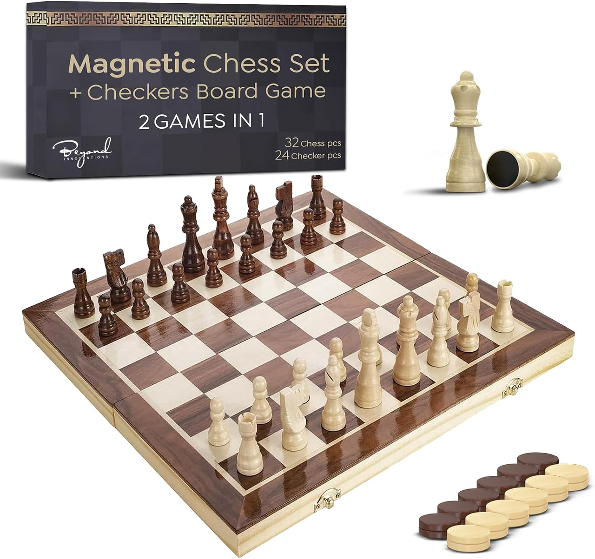

🎁 Curated Graduation Gift Picks

Portable Bluetooth Speaker — HD Sound, LED Lights, IPX4, 24H Playtime
$39.99
Powerful HD sound in a portable package with LED light show, IPX4 water resistance, 24-hour battery, and TWS pairing for stereo. Dorm room parties, study playlists, outdoor hangouts, beach trips — one speaker covers every post-graduation scenario.
✓ Why it works: A quality speaker is the #1 dorm room essential nobody puts on a registry. It becomes the social hub of their new life — whether they're heading to college or their first apartment.
🛒 View on Amazon
Instant Print Camera — Front & Rear Dual Lens, 1080P Video, Photo Printer
$35.99
Snap and print photos instantly with dual front/rear cameras at 1080P. The graduation party upgrade — let guests take and print their own memories, or gift it to the grad to document every moment of their next chapter.
✓ Why it works: Cash is #1 for graduation, but pairing it with a memorable group activity gift makes your envelope stand out. An instant camera at the party = everyone wins, and the grad keeps the photos forever.
🛒 View on Amazon
Waterdrop Cold Brew Coffee Maker — Magnesium Filter, BPA-Free 1.5L Pitcher
$29.99
Cold brew in 5 minutes with a magnesium water filter that balances acidity and unlocks aroma. Stainless steel filter, BPA-free, makes iced coffee, tea, or lemonade. No electricity needed — just water, grounds, and a dorm desk. Saves $200+/semester on campus coffee runs.
✓ Why it works: College students spend a shocking amount on coffee. A cold brew maker turns "I need caffeine" into a 30-second pour instead of a $6 line — the gift that pays for itself in the first two weeks of freshman year.
🛒 View on Amazon
KOLIPI Basketball Display Case — UV Protected Acrylic, Full-Size NBA Ball
$23.45
Clear UV-protected acrylic case fits a standard full-size basketball — signed game ball, championship memento, or senior night keepsake. 10.6" cube with stackable design. Turns a ball sitting in the garage into a display-worthy centerpiece.
✓ Why it works: For the grad who lived on the court — this is the graduation gift that honors their identity, not just their diploma. Pair it with their signed senior season ball for an unforgettable gesture.
🛒 View on Amazon
Tiger's Eye Gemstone Bracelet — 8mm Beads, Protection & Courage
$14.95
8mm round tiger's eye beads on an adjustable cord, available in S/M/L. The stone known for promoting courage, focus, and balance — exactly what a new grad needs. Over 40 stone options available. A graduation bracelet that actually looks good with everyday clothes.
✓ Why it works: Milestone jewelry that's not precious metals — comfortable for the 18-year-old who's never worn anything but a hoodie. Meaningful symbolism without the "I need to dress up" pressure.
🛒 View on Amazon
Wooden Magnetic Chess & Checkers Set — 15" Foldable, 2-in-1, Solid Wood
$24.96
Solid wood 15-inch folding board with magnetic chess and checkers pieces, built-in storage box, and 2 extra queens. Travel-friendly, beginner-friendly, dorm-room-sized. The game that lasts from college common room to family game night 20 years later.
✓ Why it works: A quality chess set is the graduation gift that ages with them — strategy at 18, nostalgia at 40. It's the rare gift that's equally at home in a dorm room and a future living room.
🛒 View on Amazon